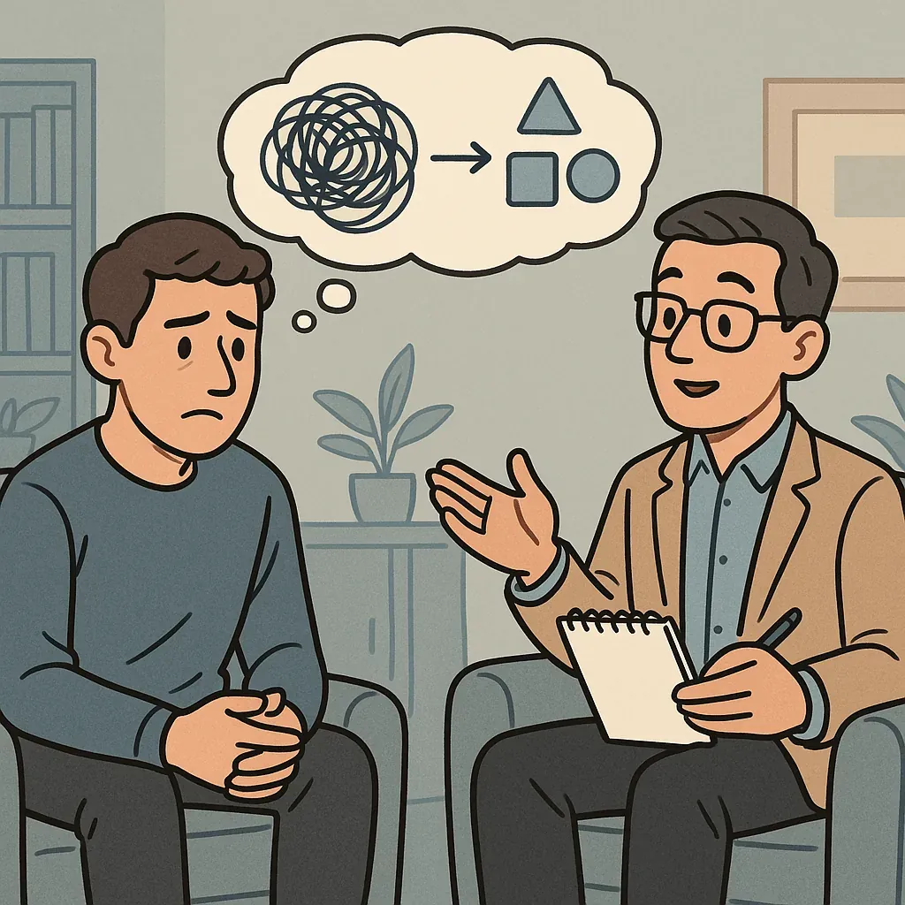

CBT
Cognitive “Constant” Behavioural Therapy
What is CBT?
Cognitive Behavioural Therapy is one of the most researched and widely used therapies in the world. It is also one of the core therapeutic models in the larger recovery process. CBT is recommended for anxiety, depression, trauma, and addiction because it gives people something most of us were never taught: a structured way to slow the loop down, examine what is driving it, and choose a response before the old wiring chooses for us.
Please take that seriously. This is not optimistic sales copy. For years I dismissed anything that sounded like "change your thinking, change your life" because I was convinced the only real solution for whatever was wrong with my brain had to arrive in pill form, preferably fast-acting and ideally covered by insurance. The idea that writing thoughts down in a structured way could help repair patterns built over two decades sounded, at best, adorable. I was spectacularly wrong.
CBT grew out of the work of Aaron Beck and Albert Ellis in the 1960s and 70s. At the time, many treatments were either years of psychoanalysis or behavioural approaches that paid little attention to what was happening inside the mind. Beck and Ellis put the spotlight on the quick, automatic stories we tell ourselves, the ones that fire before we have even registered the situation. Those stories shape emotion, behaviour, relapse risk, shame, avoidance, and the entire atmosphere of a person's inner life. Teaching people to identify and challenge them changed the field. The evidence has only accumulated since.
At its core, CBT runs on a single loop:
How to read this. A diagram of the model as this page describes it — it plots nothing and measures nothing. Situation sits outside the loop on purpose: the return runs back into thought, not into the event that started it. The event happened once. The other three are what keep going.
These pieces pull on each other constantly, and not always in the order you expect. The loop is not perfectly linear: sometimes the thought arrives first, and sometimes you are already three behaviours deep before you even notice what triggered the reaction. The entry point matters less than getting an entry point at all.
CBT works because you can break in anywhere. You do not need to catch every piece of the cycle. You just need to get hold of one. A thought. An emotion. A behaviour you can redirect. Pull one thread and the whole pattern starts to move. Do that enough times and the new response stops feeling like work. It starts becoming the default. That is not a motivational slogan. That is neuroplasticity in plain clothes.

“Constant Behavioural Therapy”
I call CBT "constant behavioural therapy" not as a criticism, but because that is what it felt like in the beginning. My thoughts were not background noise. They were a rapid-fire command centre, issuing orders to my behaviour before I had any chance to weigh in on the decision. If I wanted a different life, I had to get in there constantly, deliberately, and honestly. Not gently enough to keep the old story comfortable. Honestly enough to make it answer for itself.
A notepad and pen became my most important tools. In treatment, every time a negative thought surfaced, I wrote it down. If I had the bandwidth to work through it in the moment, I did. But often the thought arrived wrapped inside so much emotion that reflection was impossible, like trying to read a map while someone was holding it over a flame. In those moments, I stopped trying to solve it live. I captured the facts: who was there, what happened, what I felt. Then I came back later, once my nervous system had stood down.
The pattern that emerged was almost insulting in its consistency. What felt impossible to process mid-storm was usually straightforward once I was regulated. Not easy, but workable. Then the storms started arriving less often. Then less intensely. Then with a little more warning before they hit.
That is the part nobody tells you going in: CBT is not a skill we are born with. It is a capacity you strengthen over time. In my case, that meant dismantling decades of automatic thinking one thought at a time, with no dramatic proof it was working until one day it clearly was. You do not finish it. You do not get a certificate. You practice it over and over until your brain starts doing the work before you have to force it.
The Science (and Surprise) of CBT
What finally got me to take CBT seriously was the evidence. Not a therapist's recommendation. Not a workbook. Not someone in a meeting telling me it changed their life. The data. Study after study placed CBT alongside medication for depression and anxiety, and in many cases showed that the gains lasted longer after treatment ended because the skill stayed with the person. I started skeptical, convinced that "thinking differently" was repackaged wishful thinking for people who had not suffered enough to know better. Then I sat with the mechanism long enough and it clicked: of course it works. My own thought patterns, unchecked and automatic, were running on infrastructure built during the worst years of my life. They had constructed the reality I was trapped in. Retraining them was not optimism. It was engineering.
My real "Aha," or maybe just "Duh," moment came when I understood what CBT actually is. In four words: thinking about your thinking. That sounds almost insultingly simple until you realize how little conscious oversight most thinking actually gets. My emotions ran the show. I ran after them. It was fast, automatic, and effortless, with consequences that were anything but. So when it finally landed that the solution was the opposite of everything I had been doing, slowing down, intercepting, questioning, paying attention before acting, it was not abstract or complicated. It was just the one thing I had never really tried: using my brain on purpose. Deliberately. With the lights on.
In clinical circles, this is called metacognition: thinking about thinking. It is the mechanical process of moving activity out of autopilot and back toward the prefrontal cortex. When you practice these reps, you are not "staying positive." You are performing a manual override on your neural circuitry. You are moving from passenger to systems administrator.
And when it starts working, when you actually experience it for yourself, it is disorienting in the best possible way. After decades of a thought stream that flowed reliably toward disaster, I started noticing different thoughts surfacing on their own. Unprompted. Uninvited. "You could do that." I caught myself daydreaming, not about everything collapsing, which had been the default playlist, but about a future I could actually picture myself in. Occupying. Living. That shift is hard to overstate. It makes the tedious, repetitive, unglamorous work of CBT feel like exactly what it is: worth every minute.
Decades of research affirm CBT's effectiveness across anxiety, depression, PTSD, and substance use disorders. Multiple meta-analyses have found CBT outcomes comparable to pharmacotherapy alone, and in many cases more durable over time (Butler et al., 2006; Hofmann et al., 2012). When clients actively practice the skills rather than passively receive them, the benefits continue well beyond treatment because the tool goes with you.
TF-CBT: The Two-Track System for adults too
While originally designed for younger survivors, the principles of Trauma-Focused CBT are the gold standard for adult recovery as well. In adult clinical settings, you might hear this called Cognitive Processing Therapy (CPT). Whatever the label, the engine is the same: two tracks running simultaneously so you don't stall out.

Before touching a trauma memory, you build the hardware to handle it: grounding, emotional regulation, and identifying the distorted beliefs the trauma installed.
Once the foundation is stable, you methodically process the memories themselves. Not venting. Auditing. The goal is to stop the past from hijacking your present-day nervous system.
That combination matters. Traditional talk therapy often jumps to Track 2 without the tools of Track 1, which can lead to retraumatization. Understanding what is actually firing in the brain when that retraumatization happens makes the case for the two-track approach impossible to argue with. Pure coping-skills work stays in Track 1 and never addresses the root. TF-CBT and CPT do both: reducing symptoms while building a lived sense of safety, not just an intellectual understanding of it. For a broader map, the therapy types guide explains what different approaches are designed to do.
Using Emotions as the Entry Point
For a long time I felt completely hopeless trying to catch my thinking before it sent me somewhere I didn't want to go. The whole system felt sealed. I called them "switch moments." One second I was fine. The next it was like someone had flipped a circuit breaker and I was already three blocks from the liquor store wondering how I got there. By the time I registered what was happening, I was already past the point where anything I knew about thought-challenging was going to help.
"How the hell do I interrupt a thought I don't know I'm having?!"
What finally gave me an opening was realizing the vulnerable point in the system wasn't my thoughts. It was my body. Emotions left physical evidence my nervous system could not fake its way out of, like a poker player whose tell is written all over their face before the cards even hit the table. Tight chest. Stomach dropping through the floor. Heat crawling up the back of the neck. Jaw locking down without being asked to. My body had been signaling those switch moments for years before I knew to look. I just never learned the language. Learning to read that signal and respond to it before the loop executes is its own skill set.
The breakthrough wasn't catching the thought. It was noticing the mismatch. If my emotional reaction was running at a 9 and the actual event that triggered it was maybe a 2, that gap alone exposed the distortion without me needing to identify a single cognitive pattern. Just naming the discrepancy was often enough to dissolve the grip, because once I could see it clearly, the intensity no longer made sense. My body became the early warning system my brain had been too fast and too automatic to provide.

What Happens With Reps
In the beginning, this took a nearly disheartening amount of effort. Catch the emotion. Pause. Question it. Reframe it. Put it down. Pick up the next one. Dozens of times a day, every day, with no obvious feedback that anything was changing.
But repetition rewires. Over time, the automatic thoughts began losing their authority:
- "I could never do that."
- "I'm a piece of shit."
- "Don't even try."
Not replaced by affirmations or motivational content, but by something quieter and more durable: grounded, honest self-talk that didn't require constant maintenance to believe. As the inner dialogue shifted, the behaviour followed. Not through discipline, but because it finally made sense:
- Handling small responsibilities without the internal negotiation.
- Keeping a consistent sleep schedule without it feeling like punishment.
- Practicing CBT and journaling daily, not because I had to, but because I had seen what happened when I did not.
- Making actual time for things that weren't survival-related.
- Participating in conversations without mining them for validation.
- Letting go of ego long enough to ask, "What is needed of me right now?" instead of "How will this make me look?"
None of this felt forced anymore. It reflected something that had quietly taken hold underneath: the working belief that I was worth the effort. Not as a declaration. Not as an affirmation. Just as the thing that was true now.
Why CBT Works: The Brain and Body
CBT isn't a mindset trick. It produces measurable changes in how the brain and nervous system actually function. Here's what's happening underneath while you're doing the reps:
Trauma and addiction weaken this region over time. Every time you pause, examine a thought, and choose a response instead of firing one automatically, you are strengthening it. The capacity to stop before reacting is not a personality trait. It is a trainable function, and CBT is one way to train it.
In trauma survivors, this fires constantly and disproportionately. When you prove a prediction wrong, "that reaction was a 9 for a situation that was a 2," the amygdala gets new data. Knowing the specific distortions driving those predictions makes that process significantly faster. Repeated enough times, it stops treating that category of situation as an emergency.
Chronic distorted thinking can keep the stress response running continuously, even when nothing is actually wrong. CBT reduces that load by shutting down false alarms, giving the body the sustained downtime it needs to begin repairing the wear that load causes.
Every time you replace a distorted thought with an accurate one, you reinforce a new neural pathway. Repetition deepens it until it becomes the default route. The old track, "I am worthless, I will fail, do not bother," does not disappear overnight. But it weakens with disuse while the new one gets stronger with practice. Eventually the traffic shifts.
CBT does not just change how you think. It changes the physical infrastructure thinking runs on. Stronger regulation. A quieter alarm. Less accumulated damage. New default routes. That's not motivation. That's biology doing its job.
SMART Recovery is built around CBT and motivational principles. It is structured, practical, and evidence-based. Its 4-Point Program® covers building motivation, managing urges, and shifting the thoughts and behaviours that keep people stuck. If that approach resonates with you, it's worth exploring.
Note: SMART is effective for skill-building but doesn't address underlying trauma. If trauma is part of the picture, it works best alongside dedicated trauma-focused work, not instead of it.
MedCircle: A Guided CBT Session with Dr. Judy Ho

It's one thing to read about CBT, but it's another to see it in action. This session is a clear, practical demonstration of how a CBT session works , moving from theory into real-time practice.
Demystifying the CBT Process
This video from MedCircle is a fantastic, practical demonstration of what a Cognitive Behavioural Therapy (CBT) session actually looks like. It features Dr. Judy Ho guiding host Kyle Kittleson through a real-time example, showing how to connect thoughts, emotions, and behaviours in the moment.
For me, seeing the process “live” was more helpful than dozens of articles just describing it. CBT is all about identifying, challenging, and reframing the cognitive distortions that fuel our negative emotions. This video shows you how that’s done, step-by-step, in an actual conversation.
This is a core tool for rebuilding our internal framework. Watching it helps turn the abstract idea of “challenging your thoughts” into a concrete method you can start to understand and apply to your own life.
CBT provides a structured way to intercept our automatic negative thoughts, analyze their validity, and choose a more balanced perspective. This is how we begin changing the emotional and behavioural cycles we get stuck in.
// CBT vs. Medication:
Not Either/Or
Medication can be life-saving. It can quiet the storm enough to keep you functional, present, and able to engage with the work. CBT helps you read the weather, understand the pattern, and eventually steer the ship with more control.
Picture someone living with relentless anxiety. They stop going out, stop answering messages, and eventually stop leaving the house entirely. A doctor prescribes medication. The anxiety subsides. Life becomes survivable, but not necessarily fuller. Avoidance deepens quietly in the background, and the medication becomes the thing holding them in the same spot while they wait to feel ready for a life they keep putting off.
When the medication is reduced or stopped, the same fear can return, often stronger, because the brain spent that entire time confirming that the only way to feel okay was the pill. It never learned another route. They're not starting from zero. They're starting further back than when they began.
I used to be afraid of medication. I worried it would flatten everything, and that if the symptoms were managed, I would have nothing left to work with in therapy. What I eventually understood was that I had it backwards. Medication didn't make the work impossible. It made the work accessible. It quieted the noise enough that I could actually hear what was underneath it. We treated what was chemical and what was learned, not as competing approaches, but as two parts of the same repair. Together, they didn't blunt the process. They made it survivable enough to actually do.
-
Medication Relief
- Reduces physiological intensity and panic.
- Stabilizes mood to allow learning and presence.
- Creates enough safety for therapeutic engagement.
-
CBT Retraining
- Identifies thought-emotion-behaviour cycles.
- Tests beliefs against real evidence.
- Rewires automatic responses through repetition.
I am not anti-medication. I am against pretending it's enough on its own.
Medication can quiet the storm. CBT helps you understand what the storm actually is and how to stop waiting for perfect calm before you can function.
A Body-First Tool for Catching the Loop
If you're anything like me, catching the thought before it executes can feel impossible, like trying to grab smoke. The loop moves faster than conscious attention, and by the time you realize what's happening, the behaviour is already underway. This system is for that problem specifically: using the body as the entry point when the mind is moving too fast to intercept.
-
Notice the emotion in your body first
Start with what you can actually catch. For me it was the fight-or-flight surge: chest tightening, heart rate spiking, a sudden restlessness with nowhere to go. Yours might be a stomach drop, a jaw that locks, shoulders that climb toward your ears, or heat that crawls up the back of your neck. The signals are yours and they're specific. Learn them like you would learn a language, because that is exactly what they are.
-
Ask: "What just happened?"
Run a quick scan. Sometimes the trigger is obvious. Sometimes it is subtle: a tone of voice, a smell that belongs to a different decade, a reminder you didn't consciously register. And sometimes there's nothing identifiable at all. That's fine. The point is not to solve it immediately. It is to slow down enough to look.
-
Test the thought
Hold it up and examine it. What's the evidence for it? What's the evidence against? If my emotional reaction is running at a 9 and the actual situation is a 2, that mismatch is the distortion announcing itself. You do not need to identify the cognitive pattern. You just need to notice the math does not add up. Logic back in the loop, emotion loses its grip.
-
Test the mismatch
Ask directly: does this level of reaction make sense for what actually just happened? For me, the answer was no about 99% of the time. When I couldn't find a cause, I coached myself: "I'm okay." "I'm safe right now." Simple. Almost embarrassingly simple. But telling the nervous system directly that the emergency is over is often exactly what it needs to hear.
-
Write it down
In the beginning, I logged everything: the situation, the feeling, the trigger if I could find one, and what I did next. Writing forced the slowdown the emotion was trying to prevent. It also revealed patterns I would never have seen in real time. Eventually the logging became internal, but the writing phase is what built the capacity. Don't skip it.
When thoughts move too fast, your physiology is the back door they can't lock. The body signals before the mind catches up, and those signals are catchable even when the thought itself isn't. Notice the feeling, question it, coach yourself through. You'll interrupt the loop without ever landing the thought. And over time, you'll catch it earlier and earlier until the loop simply stops having the same power over you.
CBT taught me this:
Our emotions remember.
Some belong to today.
Others belong to decades ago,
and they are not equally trustworthy.
Closing Reflection
You don't have to believe every thought or obey every feeling. The goal is not to silence your brain. It is to stop letting it run unsupervised.
Catch the loop. Name the distortion. Prove it wrong. Repeat until the old scripts start losing their confidence. One day you notice the new ones are running without you having to start them.
CBT is the daily discipline that clears the noise. Not so you can feel better in a vague, general sense, but so you can do the deeper work without your own thinking constantly ambushing you. It creates the conditions for healing the trauma underneath and rebuilding an identity that belongs to you rather than to everything that was done to you.
You cannot discover your why if your brain's what keeps screaming that you are worthless.
Where to Next?
Follow the next step in order, or branch out into related topics.
- Beck, A. T., Rush, A. J., Shaw, B. F., & Emery, G. (1979). Cognitive Therapy of Depression. Guilford Press. Foundational manual outlining the cognitive model (situation-thought-emotion-behaviour loop), automatic thoughts, and structured thought records that this page translates into the “constant behavioural therapy” practice of writing thoughts down, interrogating them, and deliberately choosing new responses. Find via WorldCat
- Beck, A. T. (1976). Cognitive Therapy and the Emotional Disorders. International Universities Press. Introduces automatic thoughts and core beliefs as fast, habitual stories that shape emotion and behaviour before conscious awareness , directly backing this page’s focus on “switch moments” and the idea that CBT works by slowing down and bringing those hidden thoughts into the light where they can be examined and rewired. Find via WorldCat
- Butler, A. C., Chapman, J. E., Forman, E. M., & Beck, A. T. (2006). The empirical status of cognitive-behavioural therapy: A review of meta-analyses. Clinical Psychology Review, 26(1), 17-31. Summarizes 16 methodologically rigorous meta-analyses across depression, anxiety disorders, PTSD, substance use, and other conditions, showing that CBT produces large effect sizes and is often comparable to, or better than, pharmacotherapy alone, directly supporting this page’s claim that CBT is one of the most researched and effective therapies available. View on PubMed
- Hofmann, S. G., Asnaani, A., Vonk, I. J. J., Sawyer, A. T., & Fang, A. (2013). The efficacy of cognitive behavioural therapy: A review of meta-analyses. Cognitive Therapy and Research, 36(5), 427-440. Integrates results from multiple meta-analyses across anxiety disorders, depression, and other conditions, concluding that CBT shows strong efficacy and that treatment gains are generally well maintained over time , backing this page’s description of CBT as both highly evidence-based and uniquely durable because the skills continue working after therapy ends. View on PubMed
- National Institute for Health and Care Excellence (NICE). (2022). Post-traumatic stress disorder: Management. NICE Guideline NG116. Recommends trauma‑focused CBT as a first‑line treatment for PTSD in adults and children , supporting this page’s description of TF‑CBT as a two‑track approach (skills plus trauma processing) and its argument that survivors need both coping tools and careful work with the memories themselves. View guideline
- U.S. National Centre for PTSD. Treatment for PTSD: Trauma-Focused Cognitive Behavioural Therapy (TF-CBT). Brief clinical overview of TF‑CBT components (psychoeducation, relaxation, cognitive restructuring, and trauma narrative work) , mirroring this page’s explanation that trauma‑focused CBT builds regulation skills while also processing the trauma itself, rather than offering coping strategies in isolation. View overview
- Kolb, B., & Gibb, R. (2014). Searching for the principles of brain plasticity and behaviour. Cortex, 58, 251-260. Reviews principles of lifelong neuroplasticity and how repeated practice strengthens new neural pathways , providing the biological foundation for this page’s claim that “reps” of catching, testing, and reframing thoughts gradually shift default responses, not as wishful thinking but as physical rewiring of prefrontal control and threat pathways. View on PubMed
These sources capture CBT’s origins, evidence base, trauma-focused adaptations, and neuroplastic mechanisms , grounding this page’s focus on thought loops, TF‑CBT, and the “constant behavioural therapy” work of retraining the brain over time. They are educational and not medical advice.